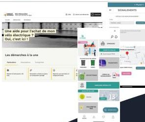

Bordeaux Métropole
Project context
Bordeaux Métropole wanted to design eco-designed citizen digital spaces that combine experience quality, performance and controlled environmental impact.
The goal was also to support Bordeaux Métropole's Citizen Digital programme through a continuous improvement approach.

Pilot
A pilot on two digital applications
The approach was delivered through a pilot covering two digital services for citizens.
Ma Ville Facile
Multi-municipality citizen mobile app.
Mes Démarches Bordeaux Métropole
Citizen procedures portal.
Results
Outcomes achieved
- Ecodesign training for the entire Citizen Digital team and upskilling on the topic.
- Two Greenspector certifications obtained: Bronze for the portal and Silver for the mobile app.
Success factors
What made the difference
Support from day one
Instructive, sustained support for the whole team on ecodesign at the start of the project.
Project team autonomy
The project team took ownership of action tracking and steadily built capability with the testing tools.
Stakeholders
Project contacts
This approach was delivered with Bordeaux Métropole teams, including:
Mathieu Lassalle
ADG in charge of Digital Programmes, Bordeaux Métropole.
Cyril Wangermez
Digital project manager, Bordeaux Métropole.
Key takeaways
A lasting approach with certified results
This project shows how a local authority can embed ecodesign into citizen digital services while keeping a strong focus on experience quality, performance and continuous improvement.
Support, team training and regular measurement helped structure a lasting approach, with certified results on the evaluated services.